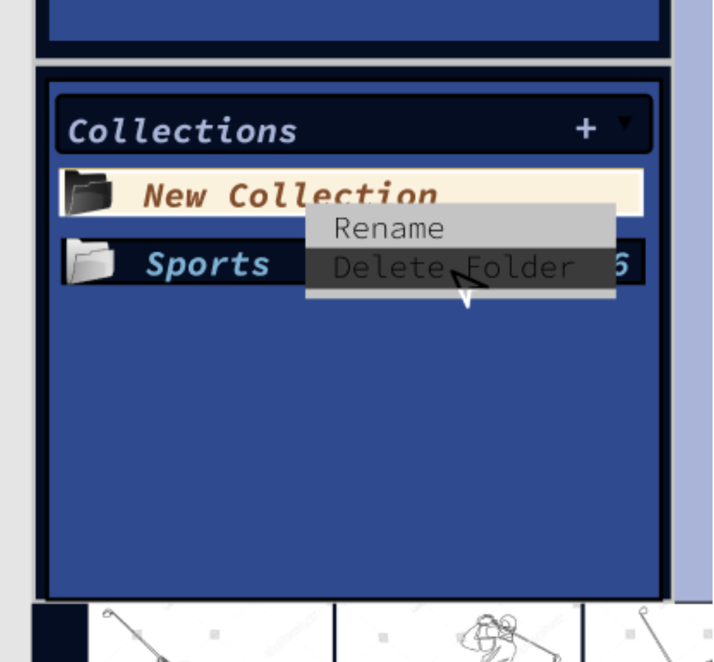

Project Ideas
Motivation
 There is a saying that goes “everyone needs three hobbies: one that lets you be creative, one that keeps you in shape and one that makes you money”, photography can be all three of these. Unlike other art forms like painting, photography does not require the same technical skills to create the art. Even though it is not easy to take a good photo, all you need is your camera or phone to be just fine together with your creative mind to visualize the scenes that you want to capture. Photography forces you to observe the world around you in ways you probably never have before. Moreover, photography can keep you in shape by forcing you to explore cities and nature as walking around is better than sitting on the couch and watching TV. Finally, photography can earn you money by doing production business or just running freelance photoshoots in a few weddings or conferences. These examples are sufficient enough to prove that photography is a very popular hobby and it is not easy to take satisfactory shots at once most of the time. As technology improves, your camera lets you take multiple shots back-to-back and review the photo immediately so that you can decide whether to take more or not. Usually we do not review the photos and are able to decide which one should be deleted or not. It is not until you return from home and realize that your camera packs a bunch of photos and you would have difficulties reviewing them manually. Understanding the need of better reviewing photo capability, my team has decided to build an image comparison software with Python that not just supports basic functionalities of reviewing images but also designing friendly UI so that everyone can use the software without reading too much instructions.
There is a saying that goes “everyone needs three hobbies: one that lets you be creative, one that keeps you in shape and one that makes you money”, photography can be all three of these. Unlike other art forms like painting, photography does not require the same technical skills to create the art. Even though it is not easy to take a good photo, all you need is your camera or phone to be just fine together with your creative mind to visualize the scenes that you want to capture. Photography forces you to observe the world around you in ways you probably never have before. Moreover, photography can keep you in shape by forcing you to explore cities and nature as walking around is better than sitting on the couch and watching TV. Finally, photography can earn you money by doing production business or just running freelance photoshoots in a few weddings or conferences. These examples are sufficient enough to prove that photography is a very popular hobby and it is not easy to take satisfactory shots at once most of the time. As technology improves, your camera lets you take multiple shots back-to-back and review the photo immediately so that you can decide whether to take more or not. Usually we do not review the photos and are able to decide which one should be deleted or not. It is not until you return from home and realize that your camera packs a bunch of photos and you would have difficulties reviewing them manually. Understanding the need of better reviewing photo capability, my team has decided to build an image comparison software with Python that not just supports basic functionalities of reviewing images but also designing friendly UI so that everyone can use the software without reading too much instructions.
Overview
An image comparison software is basically known as a tool that can take out similar images for you to decide which photos are the best of the bunch. However, in this course, our team intends to build a software that not just returns the “duplicates” of the referenced photo but also a list of closely similar photos in your collection to be reviewed. Moreover, taking out the best of the bunch of photos does not mean you delete the others. The software should be designed to support basic functionalities such as: create/delete a gallery, choose between the existing galleries to work with drag and drop images, display images in list view and more of such features should be designed on user interface to make interactions become more friendly to the users.
Description
Image Comparison Process:
The software is expected to take in 2 directories: one is from the “selected” image (the referenced image that we want to find other similar ones), the other is from the image gallery (each image from the gallery is called “candidate”). The comparison time depends on the performance of our computers but it will not take too much time (1 or 2 minutes) for the software to return a list of perceptually similar images in the gallery so that we can start the manual review.
The heart of our image comparison software is the Difference Hashing algorithm and the principle of the algorithm can be found here (Adrian Rosebrock 2017). Correspondingly, the two input images (the “selected” and “candidate”) are hashed into a string of values based on the visual appearance using the Difference Hashing algorithm. Images that are identified as duplicated or also perceptually similar when they have “similar” hash values. Hash values that are “similar” means that they are exactly the same or “Similar” hashes means that they are exactly the same or within a predefined range of Hamming Distance (Baris Coskun, et al. 2007).
The Difference Hashing Procedure is Broken Down into 4 Steps:
Step 1: Blurring the Image
The image is firstly blurred with Average Blurring technique from (Baris Coskun, et al. 2006) in purpose of minimising the difference between the corresponding pixels of the “selected” and “candidate” due to the influence of neighbourhood pixels. The neighbouring pixels are taken into the filter to calculate the mean values with the center pixel. After the mean value is calculated, this average value replaces the current value of the center pixel. Browsing this procedure through all of the pixels which means the image has been blurred.
Step 2: Converting the colored image into Grayscale
Implementing the OpenCV Library that Python supports from (Muhammad Waiz Khan 2021), the input colored image is converted into grayscale using the cv2.imread() method. Convert to grayscale means the 3-channel colors of every pixel are converted to a single gray channel. Thus, the hashing process can be faster and benefits the comparison process as the slight difference in color shades are omitted, the images are compared only based on the similar patterns.
Step 3: Resizing the image
After the image is converted into single grayscale color, no matter what the original resolution of the image was, it must be rescaled into exactly 8*9 pixels. Firstly, resizing the images helps images of different sizes now have the same size so that the patterns are easier to compare. Secondly, our purpose is to generate a 64-bit hashcode for each image for comparison. As 8 * 8 = 64 bits but the reason behind why we have to scale to a 8*9-dimension is if we compare each of the 8 pixels in one column with the adjacent pixels in that row (total of 9 pixels in a row), we are going to have 8 differences (the comparison is executed with 2 different pixels, a pixel cannot compare to itself). Therefore, 8 column * 8 differences = 64-bit hashcode.
Step 4: Hashcode difference computation
In this process, each of the pixels in an image is compared with the adjacent pixels, The output will return True if the concurrent pixel has greater value than its following pixel. On the other hand, the output will return False if the concurrent pixel has a smaller value than its following pixel. When the pixel comparison is completed, a boolean matrix is generated, which must be flattened into a 1-D array and sum of elements is calculated with the following algorithm written in Python:
diff_hash = 0
arr = diff.flatten()
for i, val in range(len(arr)):
if val != 0:
diff_hash += 2**i
According to (Hacker Factor 2013), the image comparison process is executed by comparing the hash values of the images which are just calculated above. The 2 images are considered duplicated when their hash values have 0 Hamming distance. Even the Hamming distance between the two images between 1 to 10 is recommended as perceptually similar, it is recommended that we personally tune this threshold to decide the similarity with our personal preference.
Layout of the Software’s Graphical User Interface (GUI):

Figure 1. Homepage view
The layout of the software is planned to be designed as we can see in the mock view above to provide the user-friendly interface for these following features:
> Display list of images in scrolling list view
After we select a folder, all the images in that folder will be displayed in the list view at the bottom of the software and you can scroll through the images using the backward and forward arrows or scroll your mouse.
> Create/delete a collection:
To create a new collection, navigate to the lower left side, at the Collection frame, click the “+” icon to create a new collection and rename it by left-clicking on the “New Collection” default name.
Figure 2. Create a new collection
To delete a collection, navigate to the lower left side, at the Collection frame, right click to the collection we want to delete and choose “Delete Collection”.
Figure 3. Delete a collection
> Choose an existing collection
To choose an existing collection, we also navigate to the Collection frame and use your cursor to left-click on the collection we want to choose.
Figure 4. Choose an existing collection
> Select multiple images, right-click and choose option (duplicate, delete, rename, view resolution, compare with current “selected” image)
In order to select multiple images, there are 2 options:
+ To select continuous images, we click on the starting image, then hold the “Shift” key on the keyboard and click on the destination image on the image scroll list.
Figure 5. Multiple and continuous images selected in List view
+ To select multiple but not continuous images, we hold the “Ctrl” key on the keyboard and click on the images that you want to select on the image scroll list.
Right-click on the selected images, we can choose between the options: duplicate, delete, rename, view resolution, compare with current “selected” image.
Figure 6. Multiple but not continuous images selected in List view
> Drag and drop files and folders to add into the collection.
Choose “selected” image: Navigate to the image list at the bottom of the interface, use mouse to choose, drag and drop the image into the Navigator frame locating on the upper left. Now we can see the image displaying in the frame is the current “selected” image.
> Activate automatic comparison.
Navigate to the Navigator frame, right-click on the “selected” image and choose “Compare with images in the currently selected folder”. After the comparison is complete, the similar images will be displayed on the list view at the bottom of the interface.
Figure 7. Activate automatic comparison
> Activate manual comparison (display selected image and candidate image side-by-side)
Manual comparison is usually done after automatic image comparison so that users can take out the best images of the bunch based on their preference. By clicking on the  icon located on the right side. When manual comparison is activated, the “selected” image and the “candidate” image will be displayed side-by-side.
icon located on the right side. When manual comparison is activated, the “selected” image and the “candidate” image will be displayed side-by-side.
Figure 8. Activate manual comparison
Introduce the functionalities when activating manual comparison
> Browsing through the “candidate” images using the arrow icons: 
> Switch the view side of the “selected” and “candidate” images by clicking on the  icon. By default, the “selected” image is on the left side.
icon. By default, the “selected” image is on the left side.
Figure 9. Swap “candidate” and “selected” view side
> Replace the “selected” image with the current “candidate” image by clicking on the icon located on the right side. This function is used when the user finds a “candidate” that is better than the “selected”, replaces the “selected” and keeps looking for a better “candidate”. Do not worry because this function does not remove any of your original images.
Tools and Technology
> Python:
A programming language that is tremendously popular right now because it is considered easy to work with amongst other programming languages. It takes less lines of code in Python to accomplish many common tasks from reading a website to processing text or data format like JSON or crunching numbers. Moreover, Python is powerful enough that robust enterprise-grade software can be built with it such as Pinterest, Dropbox or Quora use Python to build their offering and for automation management. Install Python to your computer is crystal clear as simple instructions are stated in this link
> An Integrated Development Environment (IDE):
That can work with Python: in this project, our team decided to use Spyder - an open source environment that is built for developing Python applications and providing a good debugging tool. Spyder can be downloaded through the instructions in this link
> OpenCV:
Stands for Open-Source Computer Vision - one of the most popular open source libraries for computer vision and image processing tasks for not only Python but C++, Java or MATLAB community. OpenCV can be installed through the instructions in this link
> Difference hash:
One of the hashing algorithms. This hashing algorithm is well known for its implementation in comparing similar images as they generate exactly the same or closely just a few different bits of hashcode when perceptually similar (Chris Currier 2019).
> tkinter:
A standard library to build graphical user interfaces for applications in Python. Python developers consider tkinter to be the easiest and fastest way to create the user interface. Note that ‘tkinter’ and ‘Tkinter’ are 2 different versions of the library that support different Python versions. ‘Tkinter’ module only supports Python 2.x and the ‘tkinter’ module only supports Python 3.x and above. In this project our team decides to use Python 3.8 so the instruction to install tkinter can be found in this link
Skills Required
> Basic Python programming:
Basic knowledge about installing extensions, importing libraries, defining a method or writing a formula to perform a calculation is needed.
> Basic knowledge about data structure:
Working with images requires basic knowledge about arrays, matrices such as defining a one or multiple dimensional array (usually 2D), performing traverse, search, insert, delete and perform calculations with the elements.
> Read and understand the code:
Doing the project requires a lot of online research. Therefore, this is the most important skill to understand the idea of the referenced codes so that we can modify the work of others to fit with our requirements.